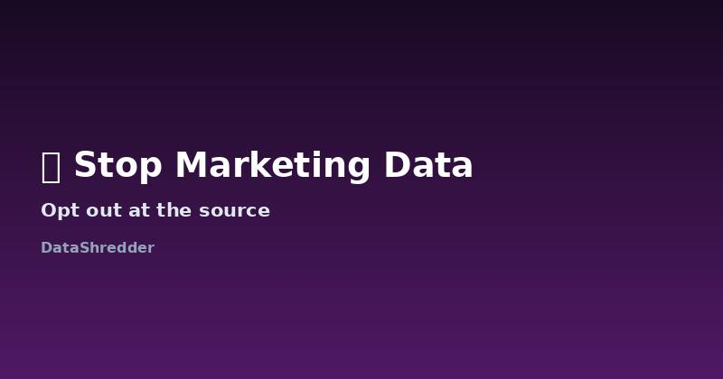

How to Stop Email & Marketing Data Collection at the Source
Updated August 2026 · 9 min read

Why unsubscribing isn't enough
Clicking "unsubscribe" stops the emails landing in your inbox, but it doesn't touch the profile that was built to target you in the first place — your browsing behavior, purchase history, and inferred interests usually stay right where they are, feeding other channels like retargeted ads or a shared marketing database. If your goal is actually reducing what's collected about you, unsubscribing is step one of three, not the whole job.
The three layers of marketing data
| Layer | What it is | What stops it |
|---|---|---|
| Email list | Your address, subscribed for a newsletter or offers | Unsubscribe link (immediate) |
| Behavioral profile | What you clicked, browsed, or bought | Opt out of "sale/sharing" or ad personalization in account settings |
| Third-party sharing | Your profile shared with ad networks or partners | A formal opt-out or erasure request specifically covering data sharing |
Cutting it off, layer by layer
- Unsubscribe from the list itself — this is required by law (CAN-SPAM in the US, GDPR consent rules in the EU) to be a one-click action.
- Go into account settings and look for "ad personalization," "interest-based advertising," or "data sharing" toggles — these control the behavioral profile, separately from the email subscription.
- If the company operates in California, look for a "Do Not Sell or Share My Personal Information" link, required under CCPA/CPRA for any business that sells or shares data with third parties.
Stopping data shared with marketing partners
The hardest layer to control is data already shared with third-party ad networks and marketing partners before you opted out — unsubscribing today doesn't retroactively pull your profile back from companies it was already shared with. For that, a formal erasure request naming the company's marketing partners (if you know them) or asking generally "please confirm and stop any sharing of my data with third-party marketing partners" is the most effective approach. Our free request generator can build exactly this kind of request.
Advertising IDs: the layer most people miss
Your phone and browser carry an advertising identifier (IDFA on iOS, GAID on Android, or various cookie-based IDs on desktop) that lets advertisers link activity across apps and sites without needing your name or email at all. Resetting or opting out of this identifier — in iOS Settings under Privacy & Tracking, or Android Settings under Ads — breaks the link between your past behavior and your device going forward, even if individual companies still hold historical data tied to the old ID. This is a device-level setting, not something any single company's opt-out link controls, which is why it's easy to overlook.
What about physical junk mail?
Physical mail marketing runs on a mostly separate data pipeline from digital marketing, usually sourced from address databases rather than your email or browsing activity. National mail preference services (like the DMAchoice registry in the US, run by the Data & Marketing Association) let you opt out of most commercial mail lists at once, rather than contacting each mailer individually. It's a different fix from anything covered above, but worth doing alongside your digital opt-outs if physical mail is part of what's bothering you.
Tracking pixels: the part unsubscribing never touches
Most marketing emails include a tiny, invisible tracking pixel that reports back the moment you open the email — before you've even decided whether to unsubscribe. Blocking image loading by default in your email client (most modern clients let you disable "load remote images automatically") stops this at the source, independent of any opt-out process, since the pixel simply never fires if the image never loads. This is a rare case where a browser or client setting is more effective than any request you could send the company.
Why the one-click unsubscribe header matters
Since 2024, major inbox providers require bulk senders to support a one-click "List-Unsubscribe" header rather than routing you through a marketing landing page designed to talk you out of leaving. If a company's unsubscribe link still redirects to a page asking you to "update preferences instead" or requires multiple clicks, that's a sign their compliance is minimal — and a good indicator that the underlying data-sharing behind the scenes probably needs a formal request rather than trusting their self-serve options.
Frequently Asked Questions
Does unsubscribing delete my data?
No — it stops future emails but typically leaves your behavioral profile and any data already shared with partners untouched.
What's the difference between opting out and requesting erasure?
Opting out (like Do Not Sell/Share) stops future use, while erasure asks the company to actually delete what they've already collected.
Is 'Do Not Sell My Personal Information' the same everywhere?
It's specific to California's CCPA/CPRA; other regions rely on GDPR's consent-based model or their own local equivalents.
Does resetting my advertising ID remove old data too?
No — it breaks the link going forward for new tracking, but historical data already tied to the old identifier may still exist unless separately deleted.
Does blocking images in my email client actually stop tracking?
Yes, in large part — most email open-tracking relies on a remote image loading, so disabling automatic image loading prevents that specific signal from being sent, independent of any unsubscribe process.
Is a company required to offer one-click unsubscribe?
Major inbox providers now require it for bulk senders to avoid spam filtering, so its absence is a strong signal a company's list management (and likely broader compliance) is outdated.